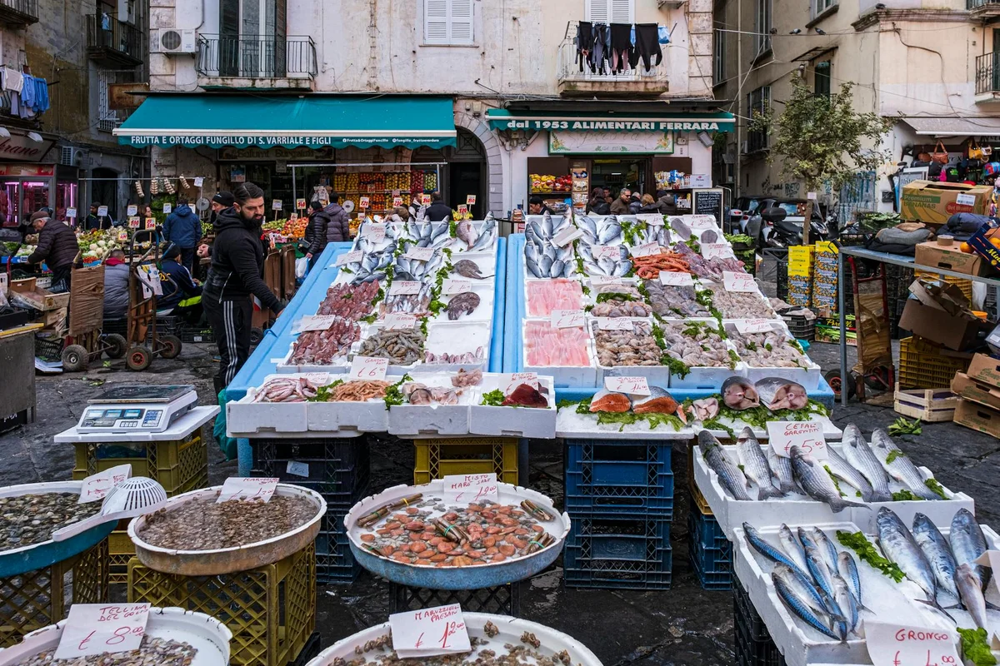
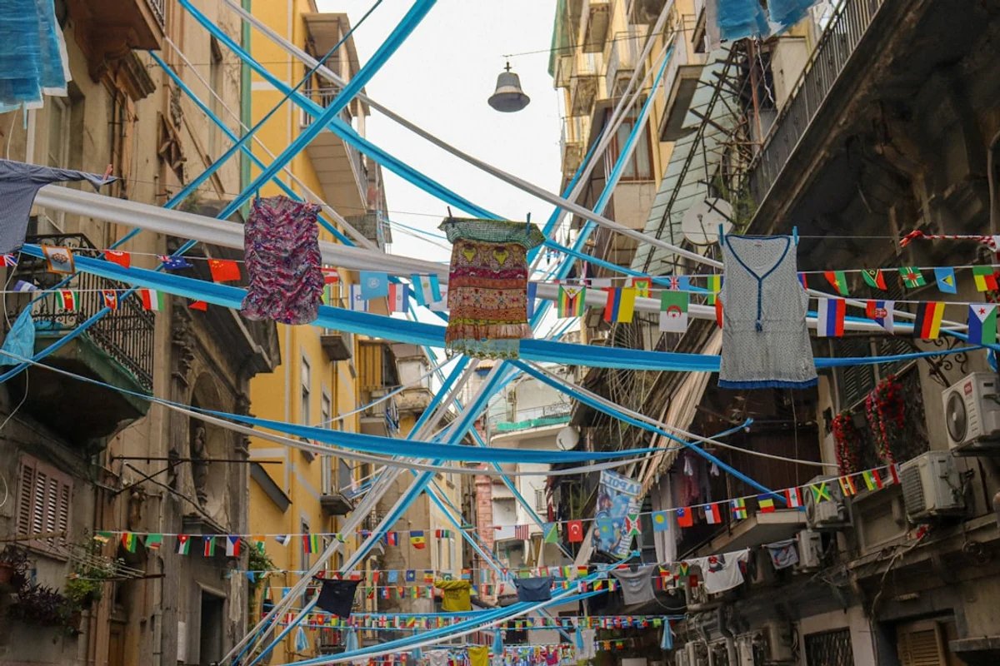

Introduction
Something is shifting in Naples. After years of being the city that travellers passed through on the way to Pompeii or Capri, the Quartieri Spagnoli has quietly become one of southern Europe's most talked-about neighbourhoods for expats seeking living in Naples Quartieri Spagnoli locals genuinely experience, not the curated version sold in guidebooks. TikTok videos of washing lines strung between ochre buildings, street altars, and steaming frittatine have gone viral through 2024 and 2025, and the neighbourhood now attracts a new wave of remote workers, artists, and food obsessives from across Europe and beyond.
The Spanish Quarter sits at the western edge of Naples' historic centre, a dense grid of narrow streets running from Via Toledo uphill toward Castel Sant'Elmo. It is one of Italy's most densely populated urban areas, and that density is exactly what makes it so alive. Where Barcelona's Raval has gentrified into smoothie bars and co-working spaces, and Rome's Trastevere charges tourist prices for pasta that would embarrass a Neapolitan grandmother, the Quartieri Spagnoli has largely resisted that transformation. In 2026, a coffee at the bar still costs between 1.10 and 1.30 euros. A proper lunch does not require a reservation.
This is not a neighbourhood that rewards passive observation. It asks something of you. It asks you to buy your vegetables from the same woman every Thursday morning, to learn which friggitoria opens at 6am and which closes before noon, to understand that the traffic is not chaos but a negotiated system with unwritten rules that locals master over months. The reward is a daily life of remarkable texture, affordability, and warmth that most European cities simply cannot offer at any price.
What the Quartieri Spagnoli Actually Looks Like to Live In
The neighbourhood is a grid, and that grid was intentional. The Spanish viceroys who laid it out in the 16th century designed it as a military settlement, with long parallel streets running perpendicular to Via Toledo to allow troop movement. Those streets, the vichi, are typically four to six metres wide, which means that in the lower section of the quarter, direct sunlight reaches the ground for only a few hours a day. In summer, this is a feature, not a flaw.
The quarter divides loosely into three vertical zones. The lower section, below Via Speranzella, is the most urban and commercially active, with constant foot traffic, street food vendors, and proximity to the main shopping axis of Via Toledo. The middle section, around Via Portacarrese a Montecalvario and Via Speranzella, is where most long-term residents and expats tend to settle. It is slightly quieter at night, has a stronger sense of residential community, and sits within easy walking distance of everything. The upper section, approaching Piazza Montesanto and the funicular, feels more transitional and is undergoing gradual change.
Noise is real and consistent. Neapolitan street life does not observe northern European timetables. Motorbikes, conversations conducted at volume, and the rhythms of shops opening and closing will accompany every morning and most evenings. Expats who thrive here tend to be those who treat this as atmosphere rather than inconvenience. Those who need silence to work will need to invest in good soundproofing or adjust their schedule to the city's quieter hours, typically between 2pm and 5pm and after 11pm.
Housing Costs and What 600 to 1,200 Euros Gets You in 2026
Rent in the Quartieri Spagnoli remains significantly lower than comparable historic-centre neighbourhoods in Rome, Milan, or Barcelona, but prices have moved in the past two years as the neighbourhood's reputation has grown. Here is a realistic picture of the 2026 rental market for long-term contracts:
- Studio (monolocale), 25 to 35 sqm: 550 to 700 euros per month. Typically on upper floors of older buildings with limited natural light in the lower vichi.
- One-bedroom apartment, 40 to 55 sqm: 700 to 950 euros per month. Mid-tier streets, often partially renovated, with a kitchen separate from the living area.
- Two-bedroom apartment, 60 to 80 sqm: 950 to 1,300 euros per month. These exist but turn over slowly because local families tend to hold them.
- Renovated apartment with terrace or roof access: 1,100 to 1,600 euros per month. Increasingly rare and increasingly sought after by the remote-work market.
A critical distinction: contracts offered through local agents (agenzie immobiliari) on the street rather than through platforms like Airbnb or short-term rental aggregators tend to be substantially cheaper. The catch is that navigating them requires some Italian and a physical presence in the neighbourhood. Arriving with a month's accommodation already booked and spending that month looking for a long-term flat is the approach most successful expats in the quarter describe.
Building condition varies enormously. The exterior of a building in the Quartieri Spagnoli tells you almost nothing about the interior. A crumbling facade can conceal a beautifully maintained apartment with original ceramic floors; a freshly painted building can hide damp walls and non-functioning heating. Always inspect in person, check water pressure, and ask specifically about heating. Gas central heating is common; electric panel heaters in a Neapolitan winter are not adequate.
Condominium fees (spese condominiali) in older buildings typically add 30 to 80 euros per month. Utility costs for a one-bedroom apartment average 80 to 120 euros per month in winter and 50 to 70 euros in summer. Internet, with fibre now available on most streets through TIM or WindTre, runs 25 to 35 euros per month.

The Pignasecca Market Circuit: How Locals Actually Shop
Mercato della Pignasecca is the main daily market serving the Quartieri Spagnoli and its surrounding neighbourhoods, and it has become genuinely viral on social media through 2025. But the TikTok version of Pignasecca and the resident version are quite different experiences.
The market stretches from Piazza Montesanto down through Via Pignasecca and spills into several connecting streets. It operates every morning except Sunday, with the densest activity between 8am and 1pm. Vendors sell fresh fish, meat, vegetables, cheese, cured meats, dried pulses, and an assortment of household goods. Prices are consistently lower than supermarkets: cherry tomatoes in summer run 0.80 to 1.20 euros per kilogram, fresh mozzarella di bufala from Campania costs 3 to 4 euros for a standard 125g ball, and a whole fresh branzino appropriate for two people can be found for 6 to 9 euros depending on the day's catch.
The insider circuit that residents build over time extends beyond Pignasecca itself. Serious home cooks in the quarter tend to combine the market with specific provisioners:
- Dry goods and legumes: The small alimentari on the side streets off Via Pignasecca often carry varieties of dried beans, lentils, and pasta shapes that supermarkets do not stock. Pasta di Gragnano, made in the hills south of Naples using traditional bronze-die extrusion, is available here at 1.50 to 2.50 euros per 500g bag, roughly the same price as supermarket pasta but notably superior in quality.
- Cheese and salumi: Several salumerie in the lower quarter stock local products including provolone del Monaco, Cilento salami, and soppressata. These small shops are the source for the same products that restaurants in the neighbourhood charge three to four times the price for.
- Bread: The bread culture in the quarter centres on pane cafone, the large, rough-crusted sourdough loaf that is the everyday bread of Neapolitan households. Several bakeries in the area produce it fresh each morning. A 700g to 1kg loaf costs 1.50 to 2.50 euros.
One aspect that social media coverage consistently misses: the market has a distinct seasonal rhythm that changes what is available and at what quality. July and August bring the full force of Campanian tomatoes, aubergines, peppers, and courgettes. October is when wild mushrooms, chestnuts, and the new season's olive oil appear. January and February, when the neighbourhood is quieter and tourists are absent, is when prices are at their lowest and the vendor relationships with regular customers are at their most evident.
Where and What to Eat: The Actual Daily Food Circuit
The food landscape of the Quartieri Spagnoli is not primarily about restaurants. Residents eat in a circuit of formats that tourist coverage rarely captures: the bar at breakfast, the friggitoria for a mid-morning snack, the trattoria or tavola calda for a quick lunch, the pizzeria for an occasional evening meal.
Breakfast (7 to 10am): The neighbourhood bar is a social institution. Coffee at the counter costs 1.10 to 1.30 euros. A cornetto (the Neapolitan version, lighter and less sweet than its Roman counterpart) adds another 1.00 to 1.20 euros. The practice of eating a brioche con gelato, a split brioche filled with ice cream, as a breakfast item exists and is wonderful. Several bars in the quarter are known among residents; the ones that last, and have lasting reputations, are not the ones nearest Via Toledo.
Mid-morning (10am to 1pm): The friggitoria tradition is specific to Naples and particularly dense in the Quartieri Spagnoli. These are small shops, sometimes little more than a counter and a frying station, that sell frittatine di pasta (fried pasta croquettes), cuoppo (paper cones of mixed fried items), zeppole (fried dough), and montanare (small fried pizzas topped with tomato and basil). Prices run from 1 to 3 euros per item. Finding a reliable friggitoria within two minutes of your apartment is, residents report, one of the first and most satisfying discoveries of life in the quarter.
Lunch (1 to 3pm): The tavola calda format, a counter service of pre-cooked hot dishes, is the weekday lunch of working Neapolitans. A full plate of pasta plus a contorno (vegetable side) costs 5 to 8 euros. Several unpretentious trattatorie in the quarter offer a fixed lunch of primo, secondo, contorno, bread, and water for 10 to 13 euros. These are not places with websites or English menus. They are identifiable by the handwritten daily menu on a chalkboard or a piece of A4 paper taped to the door.
Pizza: Living in the Quartieri Spagnoli means being within 10 minutes on foot of some of the most serious pizza in the world. The debate about the best pizzeria in Naples is genuinely unresolvable and deeply felt. What is useful for daily life is the distinction between destination pizzerias with queues and waiting lists, and the neighbourhood pizzerias that locals actually use on a Tuesday evening. A margherita at a non-destination neighbourhood pizzeria costs 5 to 7 euros. At the famous addresses, expect 8 to 12 euros for the same pizza and a wait.
The contrarian view on the famous pizza addresses: The three or four pizzerias that appear on every list and every travel video are genuinely excellent. They are also genuinely crowded with tourists and require either a long wait or a reservation made well in advance. Residents of the Quartieri Spagnoli who eat pizza regularly do not wait in those queues. They have neighbourhood alternatives that are not inferior, simply less famous. The skill of becoming a local in this neighbourhood involves identifying those alternatives for yourself, which takes weeks of exploration and is part of the pleasure.

The Real Monthly Budget: What Life in the Quarter Actually Costs
Budget transparency is one of the things most expat guides avoid, either because their numbers are out of date or because they are trying to appeal to every income bracket simultaneously. Here is a realistic breakdown for a single person living a comfortable but not extravagant life in the Quartieri Spagnoli in 2026:
- Rent (one-bedroom, mid-quarter): 750 to 900 euros
- Utilities (gas, electricity, water): 80 to 120 euros
- Internet: 25 to 35 euros
- Groceries (Pignasecca plus alimentari): 150 to 220 euros
- Eating out (3 to 5 times per week, neighbourhood level): 120 to 200 euros
- Coffee, bars, aperitivo: 40 to 70 euros
- Transport (monthly Unico Campania pass, covering metro, bus, and funicular): 42 euros
- Phone: 10 to 20 euros
- Miscellaneous (cleaning supplies, personal care, occasional entertainment): 80 to 120 euros
Realistic monthly total: 1,300 to 1,750 euros.
This is not a poverty budget. It includes regular meals out, good quality ingredients, and a comfortable apartment. For context, an equivalent lifestyle in Barcelona would require approximately 2,200 to 2,800 euros per month, and in Milan the figure would be higher still. The affordability of Naples is real and not exaggerated, but it comes with trade-offs: bureaucratic processes are genuinely slow and sometimes opaque, the city's infrastructure has persistent issues, and certain services that are unremarkable in northern European cities require patience or creative problem-solving here.
Healthcare is an important variable. EU citizens with an EHIC card or those who register with the Servizio Sanitario Nazionale (national health service) after establishing residency get access to public healthcare at minimal cost. Registration requires a codice fiscale (tax code), which is obtained from the Agenzia delle Entrate and is the first administrative step any expat should take.
Social Life, Language, and the Unwritten Rules of the Quarter
The Quartieri Spagnoli has a social architecture that is not immediately legible to outsiders. The neighbourhood is organised around a series of micro-communities: families with decades of history on the same street, informal networks of shopkeepers and artisans, the social life of specific bars and piazzas. Expats who integrate most successfully tend to be those who approach these structures with patience and genuine curiosity rather than treating the neighbourhood as a backdrop.
Language is significant. English is spoken, particularly by younger residents and anyone with experience in tourism or hospitality, but daily life in the quarter operates overwhelmingly in Neapolitan Italian, which is not simply accented standard Italian. It has distinct vocabulary, syntax, and prosody. A newcomer who arrives with standard Italian and makes an honest effort will be met with generosity. A newcomer who arrives expecting English to suffice for everything beyond restaurants will find certain doors remain closed.
Neapolitan is a language in its own right, not a dialect, with a literary tradition, a music tradition (the canzone napoletana), and a cultural pride that runs deep. Learning even a few phrases in Neapolitan, beyond standard Italian, is received with warmth that is qualitatively different from the polite appreciation you get for speaking Italian. It signals genuine respect for the place.
The social rhythm of the neighbourhood follows a pattern that surprises many newcomers from northern climates. The street is lively from early morning. There is a substantial afternoon quieting between roughly 2pm and 5pm. Evening begins early, with aperitivo culture starting around 6pm and dinner rarely happening before 8.30pm among residents (9pm to 10pm is entirely normal). Sunday mornings have a specific atmosphere, slower and more communal, centred around the Sunday lunch that remains a serious institution in Neapolitan family culture. Understanding these rhythms and adapting your schedule to them, rather than fighting them, is the single most practical piece of advice for making life in the quarter work.
What Expat Guides Miss: The Contrarian Case for the Quartieri Spagnoli Over Other Naples Neighbourhoods
The standard expat guide to Naples tends to recommend either the Chiaia neighbourhood (elegant, expensive, somewhat sanitised, popular with wealthier expats and professionals) or the Capodimonte area (green, residential, quiet, removed from the city's energy). The Quartieri Spagnoli is often mentioned with caveats: it is authentic, yes, but perhaps too intense, perhaps not appropriate for families or for people who want comfort alongside culture.
This framing deserves challenge. The caveats applied to the Spanish Quarter are often projections of class anxiety about density, noise, and visible poverty rather than genuine assessments of livability. The neighbourhood has a functioning, active community, a lower crime rate than its reputation suggests (petty theft is a real concern, as in any dense urban area in southern Europe, but violent crime directed at residents is not a defining characteristic of life there), and a quality of daily human contact that more affluent neighbourhoods in Naples deliberately trade away for quieter, more private lives.
The argument that the Quartieri Spagnoli is not for families is particularly worth interrogating. Neapolitan families with children have lived here for generations. The question is not whether the neighbourhood supports family life but whether it supports the specific anxieties about child-rearing that are common among expats from northern Europe and North America, which is a different question entirely.
For the remote worker, the freelancer, the writer, the artist, or anyone whose work does not require daily office presence, the case for the Quartieri Spagnoli over Chiaia or the Vomero hill neighbourhood is straightforward: the food is more interesting, the human texture is richer, the cost is lower, and the sense of living inside a genuinely functioning city rather than a pleasant residential enclave is more rewarding over time. The discomforts are real. So are the satisfactions.
Final Thoughts
The Quartieri Spagnoli in 2026 sits at an interesting moment. It is more visible than it has ever been, carried on social media by millions of views of its washing lines and frittatine and street altars. That visibility has brought new arrivals, slightly higher rents in some pockets, and the first signs of the slow commercial change that has transformed other southern European neighbourhood into tourism products. But the transformation is far from complete, and the core of daily life in the quarter remains what it has been for decades: dense, warm, affordable, demanding, and unlike anywhere else in Europe.
For anyone seriously considering living in Naples and specifically in the Spanish Quarter, the most useful preparation is not reading another list of recommended restaurants. It is spending two to three weeks in the neighbourhood before committing to a lease, buying bread and vegetables from the market every morning, eating lunch at the tavola calda, and paying attention to the social rhythms of the specific streets you are considering. The neighbourhood will tell you, quite directly, whether it suits you.
If the answer is yes, very little in European urban life compares to it for value, texture, and the particular pleasure of being genuinely embedded in a place rather than adjacent to it. Explore more guides to authentic Italian urban living on Tu Giuru, and if you have questions about making the move to Naples, reach out directly through the contact page.
Frequently Asked Questions
Is the Quartieri Spagnoli in Naples safe to live in?
The neighbourhood has a reputation that overstates its dangers. Petty theft, including pickpocketing and occasional motorbike bag snatching, is a real concern in any densely populated southern European urban area, and basic precautions apply. However, serious violent crime directed at residents is not a defining feature of life there. Thousands of Neapolitan families and a growing number of expats live in the quarter without incident. The streets are active and observed at most hours, which is itself a form of safety. Taking standard urban precautions, not displaying expensive electronics openly, being aware of your surroundings, and learning which streets are more and less active at night will cover most of the practical risk.
How much does it cost to rent an apartment in Naples Quartieri Spagnoli in 2026?
Realistic 2026 rental prices for long-term contracts run from approximately 550 to 700 euros per month for a studio apartment, 700 to 950 euros for a one-bedroom apartment, and 950 to 1,300 euros for a two-bedroom. Renovated apartments with outdoor space or terrace access command 1,100 to 1,600 euros. These figures apply to contracts negotiated directly through local agents or landlords. Short-term and platform-listed rentals are notably more expensive. Add 80 to 120 euros for utilities and 25 to 35 euros for fibre internet.
What is the Pignasecca market and when should I go?
The Mercato della Pignasecca is the main daily street market serving the Quartieri Spagnoli and surrounding neighbourhoods in central Naples. It operates every morning except Sunday, with the busiest and most complete selection available between 8am and 1pm. The market sells fresh fish, meat, produce, cheese, cured meats, and dry goods at prices consistently below supermarket levels. Seasonal shopping at Pignasecca is particularly rewarding: summer brings Campanian tomatoes, peppers, and courgettes at very low prices; autumn brings wild mushrooms and new-season olive oil. The market has gone viral on TikTok and Instagram through 2025, so arriving early on weekday mornings gives you the resident experience rather than the tourist one.
Do I need to speak Italian to live in the Quartieri Spagnoli?
English is spoken in many restaurants and some shops, particularly those accustomed to tourists and younger residents, but daily life in the neighbourhood operates in Italian and frequently in Neapolitan. Functioning with standard Italian is entirely possible and will be met with generosity, but relying on English alone will limit your integration significantly. Basic Italian before arrival is strongly recommended. Learning a handful of phrases in Neapolitan specifically, which is a distinct language with its own vocabulary and grammar, is received with exceptional warmth and is one of the fastest ways to shift from being perceived as a visitor to being treated as a neighbour.
What is the total monthly budget for living in Naples Quartieri Spagnoli?
A realistic monthly budget for a single person living comfortably in the Quartieri Spagnoli in 2026 runs from approximately 1,300 to 1,750 euros. This covers rent for a one-bedroom apartment (750 to 900 euros), utilities (80 to 120 euros), internet (25 to 35 euros), groceries from the Pignasecca market circuit (150 to 220 euros), eating out three to five times per week at neighbourhood rather than destination prices (120 to 200 euros), the monthly public transport pass covering metro, bus, and funicular (42 euros), and miscellaneous costs. This is substantially lower than equivalent quality of life in Barcelona, Rome, or Milan.